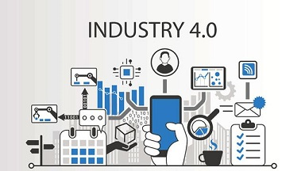

Gedurende de studie technische bedrijfskunde zijn verschillende thema’s behandelt die te maken hebben met smart industrie. Voor de eerste week is gevraagd wetenschappelijke inzichten te verkrijgen van verschillende thema’s. Om aan hoogwaardige kwaliteit bronnen te komen is een video bekeken waaruit het volgende is geleerd:
De studie technische bedrijfskunde heeft veel raakvlak met industrie 4.0. Hierbij betreft het nieuwe ontwikkelingen die toegepast kunnen worden binnen de industrie. Onderwerpen als IoT, big data, hyperautomatisering, AI, 5G, etc. gaan steeds belangrijker worden voor bedrijven. Deze technologieën geven bedrijven de mogelijkheden om meer inzicht te verkrijgen in het proces en efficiënter te werken. (Researchgate, 2019) (Ieeexplore, 2017) 
Door het Internet of Things komen apparaten met elkaar in verbinding te staan en kunnen deze communiceren. Door het IoT kunnen apparaten gegevens uitwisselen en kunnen beslissingen nemen waar geen menselijke hulp bij nodig is. In de toekomst zal dit alleen maar toe gaan nemen. Er komen nieuwe technologieën om smart cities te verwezenlijken, slimme thermostaten om zo min mogelijk gas te verbruiken, slimme- en kunstmatige intelligentie om beslissingen te maken, nog sneller netwerk (5G), etc. Door het Internet of Things hebben bedrijven ook steeds meer data die ingezet kan worden voor analyses en verbeteringen. (Zanella, 2014) (Xu, 2014)
Er komen steeds meer slimme producten die helpen het leven makkelijker te maken. Denk hierbij aan de Google home, slimme thermostaat, Google Glasses etc. Nieuwe producten zorgen voor een andere manier van ontwikkeling. Er moet rekening gehouden worden met de behoeftes van de klant, wat steeds specifieker wordt. Daarnaast is het belangrijk dat de producten ethisch verantwoordt zijn. (sciencedirect, 2017)
Het 3D printen wordt een steeds populairdere techniek binnen de industrie. Complexe klant specifieke wensen kunnen steeds makkelijker omgezet worden tot een product door middel van 3D printen. Tegenwoordig worden er ook grotere objecten geprint door middel van 3D printen en wordt het vaker gebruikt binnen de metaalsector en farmaceutische industrie. Medicijnen worden geprint door middel van 3D technologieën en in de toekomst zal deze productie techniek steeds vaker voor komen. (Rengier, 2010) (Clark Ligon, Liska, Stampf, Gurr, & Mülhaupt, 2017)
I'm in Business
I'm in Connection
I'm in Technology
I'm in Project